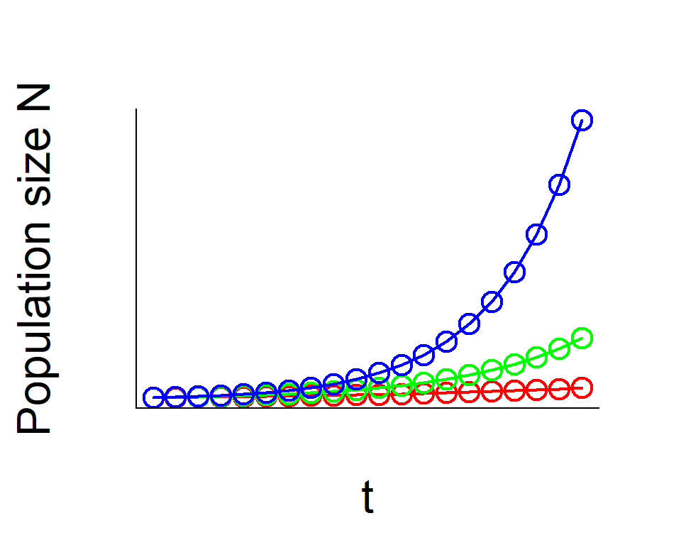
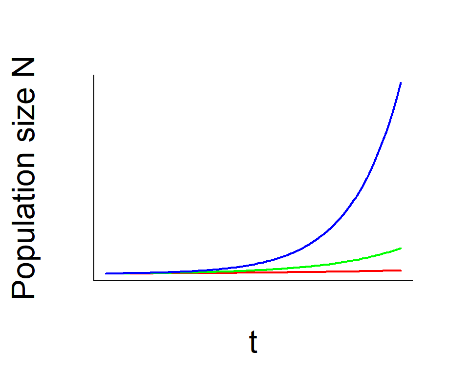
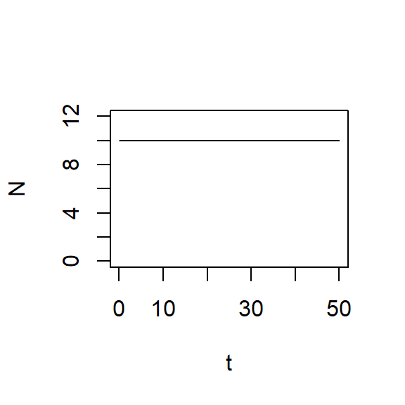
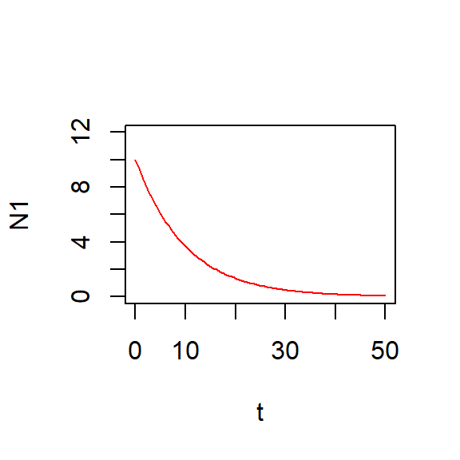
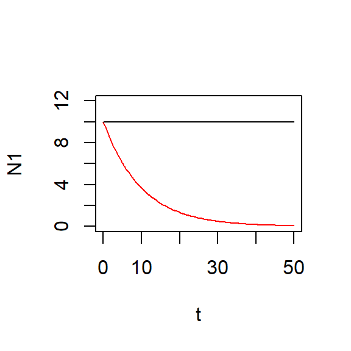
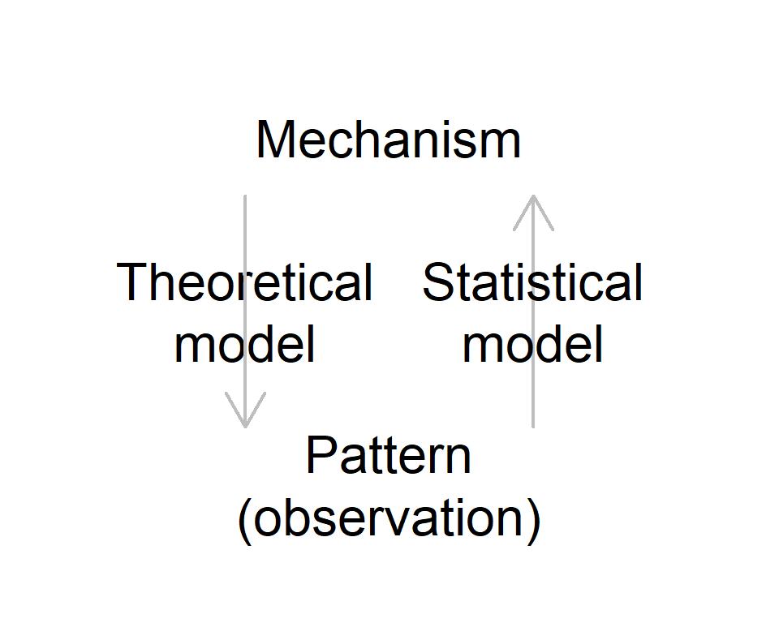
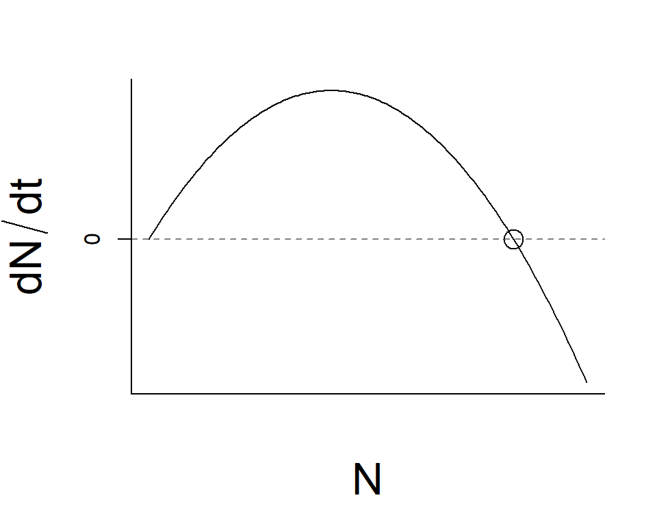
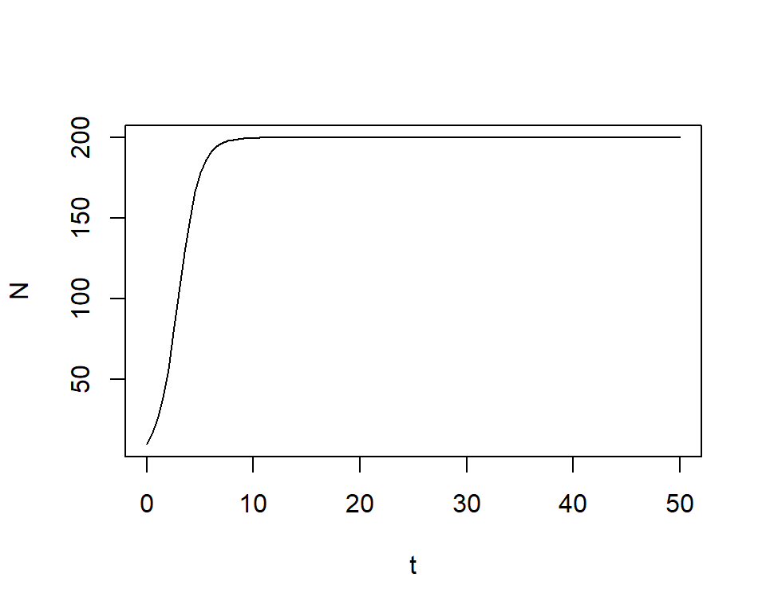

Population Models
BIO605 FA20
Population ecology
What is a population?
A population is a group of individuals of the same species that inhabit a given area
- Populations have structure, including density, spacing and age distribution
- Why is it important that the individuals are members of the same species?
- Why is it important for a population to have a spatial boundary?
Why is it important?
Population ecology is
- important for understanding the demography of the species
- the basis of community ecology and other sub-disciplines of ecology
- important for conservation, especially in the population viability analysis
- useful for the control of invasive species
Population ecology
What do population ecologists study?
Population dynamics — how population size/density changes over time in a single habitat
Distributions — how populations are distributed over space
Landscape-level dynamics — how populations are maintained at the landscape level (metapopulation)
Examples
Population dynamics

birth & death
(immigration, emigration)
Spatial distribution

local environments, dispersal
Exponential model
What determines population size?
- Suppose you observe a population of hydra
- Counted birth & death events everyday
- Estimated birth & death rates
Math
Initial population size \(N_0\), birth rate \(b\) & death rate \(d\)
\[ \begin{align} N_1 &= N_0 + bN_0 - dN_0\\ N_2 &= N_1 + bN_1 - dN_1\\ ... \end{align} \]
Math
When \(N_0 = 10\), \(b=0.8\) and \(d=0.2\)
\[ \begin{align} N_1 &= N_0 + bN_0 - dN_0\\ &= 10 + 0.8*10 - 0.2*10\\ &= 16\\ \end{align} \]
Math
Then \(N_1 = 16\), \(b=0.8\) and \(d=0.2\)
\[ \begin{align} N_2 &= N_1 + bN_1 - dN_1\\ &= 16 + 0.8*16 - 0.2*16\\ &= 25.6\\ \end{align} \]
Simple model
Generalize as \(N_t\) and modify the equation
\[ \begin{align} N_{t+1} &= N_{t} + bN_{t} - dN_{t} &&\text{Generalized}\\ N_{t+1} - N_{t} &= bN_{t} - dN_{t} &&\text{Subtract $N_{t}$ from both sides}\\ N_{t+1} - N_{t} &= (b-d)N_{t} &&\text{Organize the equation}\\ \Delta N_{t} &= rN_{t} &&\text{$\Delta N_t = N_{t+1} - N_{t}$, $r = b-d$}\\ \end{align} \]
- \(\Delta N_{t}\) represents the net increase per unit time
- \(r = b-d\) determines the population growth rate
Simple model

Model
\(N_{t+1} = N_{t} + rN_{t}\)
Growth rate \(r\)
- \(r = 0.1\) red
- \(r = 0.2\) green
- \(r = 0.3\) blue
Simple model
Geometric population model assumes
- population growth of discrete intervals \(\Delta t = 1\)
- unit can be one year, day, hour…
Exponential model
Convert the model to a continuous version
- Birth & death processes can occur continuously
- Take the limit of \(\Delta N\)
- \(\displaystyle \lim_{\Delta t \to 0} \Delta N\)
- As \(\Delta t\) approaches zero, the rate of change become instantaneous
- Exponential model \(\frac{dN}{dt} = rN\)
- Solving \(\frac{dN}{dt} = rN\) yields \(N_t = e^{rt}N_0\)
Exponential model

Model
\[ \begin{aligned} \frac{dN}{dt} &= rN\\ N_t &= e^{rt}N_0 \end{aligned} \]
Population growth rate
- \(r = 0.1\) red
- \(r = 0.2\) green
- \(r = 0.3\) blue
Exponential model
Recall: \(r = b-d\)
- What happens if \(r = b-d = 0\)?
(i.e., death equals birth) - What happens if \(r = b-d < 0\)?
(i.e., death exceeds birth)
R exercise: create time data
Create “time” data t (x-axis)
seq()is a function to create a vector- give
from,toandlength
R exercise: check elements
Check elements
## [1] 0.0000000 0.5050505 1.0101010 1.5151515 2.0202020## [1] 47.97980 48.48485 48.98990 49.49495 50.00000R exercise: initial condition
Define the initial population size N0
## [1] 10R exercise: growth rate
Define the population growth rate r
- Set
0as a reference case
## [1] 0R exercise: equation
Write the equation
exp(x)is \(e^x\)
R exercise: visualize
Visualize with plot()

R exercise: growth rate
Try another parameter
- Set
r1as-0.1

R exercise: compare
Compare with N

Theory
Recall: what’s the role of theory?

Theory
- Generate predictions with given mechanisms
- How do population dynamics look like if \(r = XX\)?
- \(r\) is a parameter
Observation
Recall: what’s the role of observation?

Observation
- Infer mechanisms (parameters)
- \(N_0 = 10\) and \(N_{50} = 300\)
- Assume exponential model
- \(N_t = e^{rt}N_0\)
- \(N_{50} = e^{50r}10\)?
- \(r = ??\)
*Note: in practice, parameter inference is much more complex to account for sampling uncertainty
Logistic model
Exponential model
In the exponential model of population growth
- no resource limitation assumed
- a population grows infinitely
- in nature, however, resources are limited
*Exponential model is appropriate for describing dynamics of a newly established population
Exponential to logistic
Instantaneous population growth \(\frac{dN}{dt}\) is
\[ \begin{align} \frac{dN}{dt} &= rN &&\text{Exponential model}\\ \frac{dN}{dt} &= rN(1-\frac{N}{K}) &&\text{Logistic model}\\ \end{align} \]
Logistic model: parameter
\[ \begin{align} \frac{dN}{dt} &= rN(1-\frac{N}{K}) &&\text{Logistic model}\\ \end{align} \]
- \(r\) is the intrinsic rate of population growth
- \(K\) is the carrying capacity
Logistic model: what if
\[ \begin{align} \frac{dN}{dt} &= rN(1-\frac{N}{K}) &&\text{Logistic model}\\ \end{align} \]
Questions
- If \(N < K\), \(\frac{dN}{dt}\)
- If \(N = N\), \(\frac{dN}{dt}\)
- If \(N > N\), \(\frac{dN}{dt}\)
Logistic model: visualize
\[ \begin{align} \frac{dN}{dt} &= rN(1-\frac{N}{K})\\ \end{align} \]

Logistic model: competition
\[ \begin{align} \frac{dN}{dt} &= rN(1-\frac{N}{K}) &&\text{Logistic model}\\ \end{align} \]
The term \(1-\frac{N}{K}\)
- is a decreasing function of \(N\)
- expresses density dependence
- involves density dependent birth & death
Logistic model: solve
Solve the equation
\[ \begin{align} \frac{dN}{dt} &= rN(1-\frac{N}{K})\\ N_t &= \frac{K}{1+(\frac{K-N_0}{N_0})e^{-rt}} \end{align} \]
R exercise: define parameters
Model
\[ \begin{align} N_t &= \frac{K}{1+(\frac{K-N_0}{N_0})e^{-rt}} \end{align} \]
Create time: t={0...50}
Define parameters: r=1, K=200, N0=10
R exercise: write the eq.
Model
\[ \begin{align} N_t &= \frac{K}{1+(\frac{K-N_0}{N_0})e^{-rt}} \end{align} \]
Write in two lines to avoid errors
R exercise: visualize

R exercise: visualize
Model
\[ \begin{align} N_t &= \frac{K}{1+(\frac{K-N_0}{N_0})e^{-rt}} \end{align} \]
Make predictinos under the following scenarios
- What if
r=0.1,K=200,N0=10(store asN1) - What if
r=1,K=100,N0=200(store asN2) - Plot model predictions on a single figure
Logistic model: +alpha
Modify the equation to facilitate your understanding
\[ \begin{align} \frac{dN}{dt} &= rN(1-\frac{N}{K})\\ \frac{dN}{dt} &= N(r-\frac{rN}{K})\\ \frac{dN}{dt} &= (r-\beta N)N &&\text{Use $\beta = \frac{r}{K}$}\\ \end{align} \]
Discrete model
Continuous observation…?
- Exponential & logistic models are continuous
- Can you observe population size continuously? No way
- Discrete models
- How continuous and discrete models are related?
Multiplicative expression
- Suppose you made observations at year 0, 1, 2,…
- Simplest expession would be \(N_1 = \lambda N_0\)
- Population growth \(\lambda = \frac{N_1}{N_0}\)
Multiplicative expression
Example
\[ \begin{align} N_1 &= \lambda N_0\\ N_2 &= \lambda N_1\\ N_3 &= \lambda N_2 \end{align} \]
Multiplicative expression
Express differently
\[ \begin{align} N_3 &= \lambda N_2\\ &= \lambda * \lambda N_1\\ &= \lambda * \lambda * \lambda N_0\\ &= \lambda^3 N_0\\ \end{align} \]
Geometric model
Generalize - Geometric model
\[ \begin{align} N_{t+1} &= \lambda N_t &&\text{relate $N_{t+1}$ to $N_t$}\\ N_t &= \lambda^t N_0 &&\text{relate $N_{t}$ to $N_0$}\\ \end{align} \]
Geometric model: compare
Compare
\[ \begin{align} N_t &= \lambda^t N_0 &&\text{Geometric}\\ N_t &=e^{rt} N_0 &&\text{Exponential}\\ \end{align} \]
Let \(e^r\) be \(\lambda\)…the two models become identical!
Geometric
a population grows when \(\lambda > 1\) (i.e. \(r > 0\))
Exponential
a population grows when \(r > 0\) (i.e. \(\lambda > 1\))
Beverton-Holt model
Beverton-Holt model
Include density dependence (\(\beta = \frac{\lambda-1}{K}\))
\[ \begin{align} N_{t+1} &= \frac{\lambda N_t}{1 + \beta N_t} &&\text{relate $N_{t+1}$ to $N_{t}$}\\ \frac{N_{t+1}}{N_t} &= \lambda_t = \frac{\lambda}{1 + \beta N_t} \end{align} \]
- When \(N_t = 0\), \(\lambda_t\)…
- When \(N_t = K\), \(\lambda_t\)…
- When \(N_t > K\), \(\lambda_t\)…
Beverton-Holt model: solve
Beverton-Holt model
Solve the equation
\[ \begin{align} N_{t+1} &= \frac{\lambda N_t}{1 + \beta N_t} &&\text{relate $N_{t+1}$ to $N_{t}$}\\ N_{t} &= \frac{K}{1+(\frac{K-N_0}{N_0})\lambda^{-t}} &&\text{relate $N_{t}$ to $N_{0}$}\\ \end{align} \]
Beverton-Holt model: compare
Compare
\[ \begin{align} N_{t} &= \frac{K}{1+(\frac{K-N_0}{N_0})\lambda^{-t}} &&\text{Beverton-Holt}\\ N_t &= \frac{K}{1+(\frac{K-N_0}{N_0})e^{-rt}} &&\text{Logistic}\\ \end{align} \]
Let \(e^r\) be \(\lambda\)…the two models become identical!
Summary
Model types
Continuous models are used in pure theoretical research
Discrete models can be used in both theoretical and statistical analysis
No resource limitation
- Exponential (continuous)
- Geometric (discrete)
Resource limitation
- Logistic (continuous)
- Beverton-Holt (discrete)
Other models
There are (many) other models
but most of them are a modification of these basic models